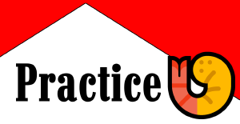

GT3.LIFE & 3GTUK — SIM RACING + KARTING
One team that won it all in 2024, then split into three to chase three titles at once. 🍤 GP now leads the family into sim racing and real-life karting alike.
Hydrated· Moisturised· Unbothered
One title-winning team, split into three liveries to fight three campaigns at once.
Where it all started. Practice 🍤 took the GT3.Life Constructors' crown in 2023, the team's setup process turning into silverware for the first time.
2023 CONSTRUCTORS' CHAMPIONS View team → Sim Racing + Real-World KartingThe team's lead identity going forward. Born from the post-2024 split, 🍤 GP now carries the name onto real karting circuits as well as the sim.
FLAGSHIP TEAM — SIM & KARTING View team → 3GTUK Championship
Took on a season split in two — and won both halves. Two Constructors' Championships in a single year, with Matthew Riley adding a second Drivers' title.
2024 CONSTRUCTORS' CHAMPIONS — BOTH HALVES View team →From one team to three — every title along the way.
The first title of the project, and proof the setup process actually worked.
His second title, won as the team began transitioning into the 3GTUK era.
Practice 🍤, 🍤 GP, and Scuderia Practice 🍤 split off to run separate campaigns, with 🍤 GP taking the lead name into real-world karting.
A season run in two halves, won twice — two Constructors' Championships in one year.
WHO WE ARE
Prawn GP began as a single entry, Practice 🍤, racing the GT3.Life Championship. A Constructors' title in 2023 was followed by a second Drivers' Championship for Matthew Riley in 2024, as the team began its move into the 3GTUK era.
Rather than defend one title under one name, the team split into three liveries to chase three campaigns at once: Practice 🍤, 🍤 GP, and Scuderia Practice 🍤 — the latter promptly winning both halves of a split 2024 season.
🍤 GP now carries the name forward as the lead identity, racing both on the sim and on real karting circuits.
"Hydrated. Moisturised.
— The Prawn GP philosophy
Unbothered."
Clean racing, fair stewarding, and no excuses after a bad qualifying session.
Every car runs a real setup process — it's the name on the door for a reason.
We're chasing championships, not taking ourselves too seriously while we do it.